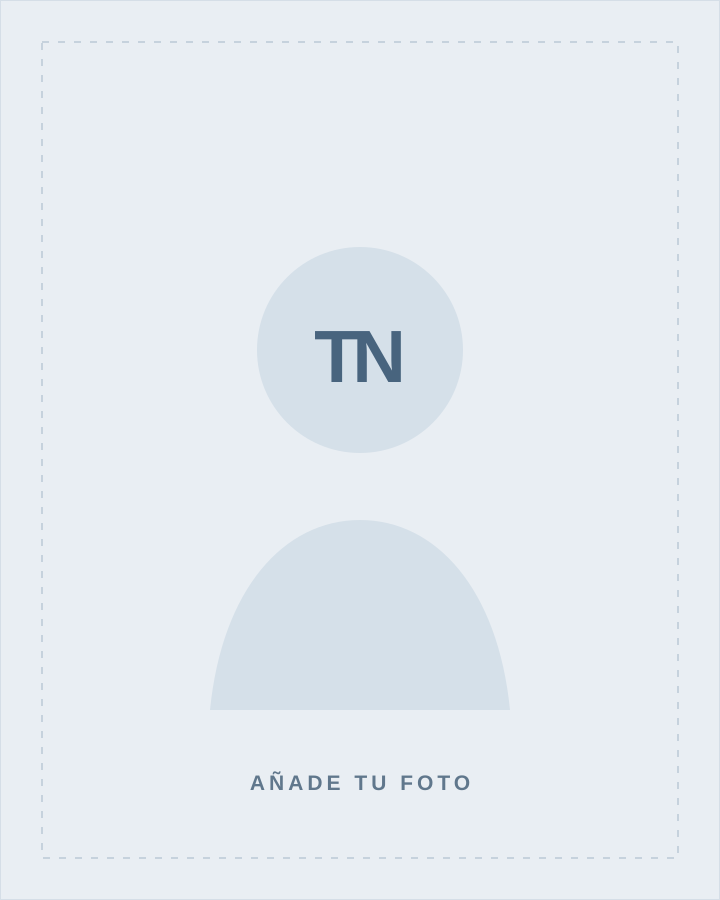

[Nombre del proyecto principal]
[Describe el reto, tu contribución concreta y el resultado obtenido. Si puedes, incluye una cifra verificable.]
Portafolio profesional / [Especialidad]
Soy Adrian Torres , ahora mismo estoy desarrollando mi carrera profesional en Córdoba, estoy estudiando Administración de Sistemas Informáticos en Red que me será util como base para posteriormente realizar el curso de especialización en ciberseguridad.
Actualmente, busco realizar ciertas activades como, desarrollo de paginas web, automatizaciones reparaciones, configuraciónes de sistemas, instalaciones de sistemas operativos y algunas actividades más.

Cordoba · España01 / Perfil
Mi recorrido combina desde la educación infantil, pasando por: primaria, secundaria, bachillerato tecnológico y actualmente grado superior Ciberseguridad . Me motiva es algo que siempre me ha interesado aprender y me fascina de como está compuesto y como se ha llegado tan lejos respecto a la seguridad de todo lo qu etenga que ver con internet o sistemas.
En cada proyecto busco trabajar de la manera más efectiva posible y rápida, siempr intentando ser lo más eficaz posible. Creo que los buenos resultados nacen de escuchar, pensar con claridad y trabajar bien con otras personas. Personaliza esta presentación con detalles reales sobre ti.
Conoce mi recorridoMi manera de trabajar
Escuchar el contexto y definir qué significa hacerlo bien.
Convertir objetivos en soluciones útiles y bien ejecutadas.
Medir, compartir lo aprendido y mejorar con cada entrega.
02 / Trabajo seleccionado
Una selección de trabajos, iniciativas o retos que muestran cómo convierto ideas en resultados.
[Describe el reto, tu contribución concreta y el resultado obtenido. Si puedes, incluye una cifra verificable.]
[Qué querías conseguir, qué hiciste y qué aprendiste durante el proceso.]
[Puedes incluir un proyecto académico, personal, voluntario o una iniciativa propia.]
Sustituye las tarjetas por proyectos reales y elimina las que no necesites.
03 / Trayectoria
Presenta tu recorrido en orden cronológico. Si estás empezando, cuenta prácticas, formación, voluntariado o proyectos personales.
Ver currículum completo[Empresa u organización] · [Ubicación o remoto]
[Explica tu responsabilidad y un resultado o aprendizaje relevante.]
[Empresa u organización] · [Ubicación]
[Resume tus tareas principales y el valor que aportaste.]
[Centro de estudios] · [Ciudad]
[Especialización, mención o conocimientos relacionados con tus objetivos.]
04 / Caja de herramientas
05 / Próximo paso
Estoy buscando [tipo de oportunidad o colaboración]. Si mi perfil puede aportar a tu equipo, me encantará conocerte.
[tu-correo@ejemplo.com]